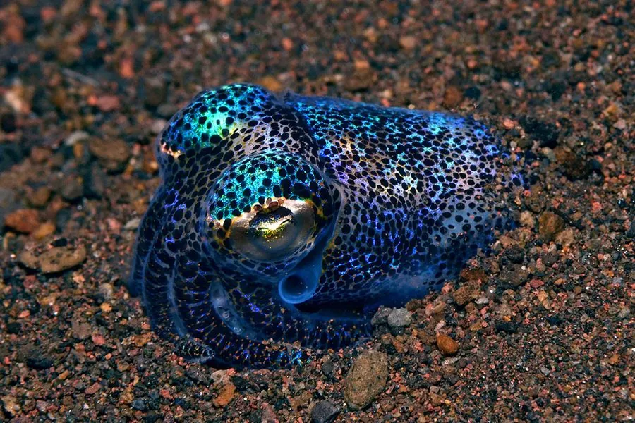

软体动物 · 动物界
柏氏四盘耳乌贼 Euprymna berryi

体型仅几厘米的小型乌贼，鳍圆如耳，外套腔内共生发光细菌，夜间在浅海沙底活动，分布于西太平洋暖海。
- 分类
- 门软体动物门纲头足纲目耳乌贼目科耳乌贼科属四盘耳乌贼属
- 栖息环境
- 潮间带下区至水深数十米的沙泥底与泥沙底，白天埋沙
- 地理分布
- 西太平洋暖海区，包括中国南方沿海、日本南部、菲律宾和印度尼西亚
- 保护级别
- 尚无保护级别；常作为底拖网兼捕物
物种志
柏氏四盘耳乌贼的胴部短圆，胴长仅二至三厘米，加上腕足全长也不过五厘米左右，是体型很小的头足类。它的鳍呈圆形，位于胴部两侧，像一对小耳朵，耳乌贼之名由此而来。体色浅褐至灰白，体表散布细小的褐色斑点，皮肤能随环境变色。腕足短，吸盘两列，雄体有一条特化的交接腕。
它分布于西太平洋的暖海区，包括中国南方沿海、日本南部、菲律宾和印度尼西亚，栖息在潮间带下区至水深数十米的沙泥底和泥沙底，白天埋在沙中，夜间出来捕食小型虾类和多毛类。它的外套腔内有一个发光器，里面共生着发光细菌，能发出柔和的蓝光，被认为可以消除自身在月光下投下的影子，躲避下方的捕食者。它是短寿命种类，寿命约一年，繁殖后死亡。它尚无保护级别，常作为底拖网的兼捕物，也可作为观赏性头足类饲养。
形态与习性
- 胴长仅二至三厘米，全长约五厘米
- 鳍圆形，位于胴部两侧，形如小耳
- 发光外套腔内有发光器，共生发光细菌
- 栖息水层潮间带下区至水深数十米的沙泥底
- 习性白天埋沙，夜间捕食小型虾类
- 寿命约一年，繁殖后死亡
趣味知识
- 它只有拇指大小，两侧的圆鳍像一对小耳朵。
- 它肚子里养着发光细菌，夜里能发出柔和的蓝光。
- 这种光能把自己的影子藏起来，让下方的捕食者看不见它。